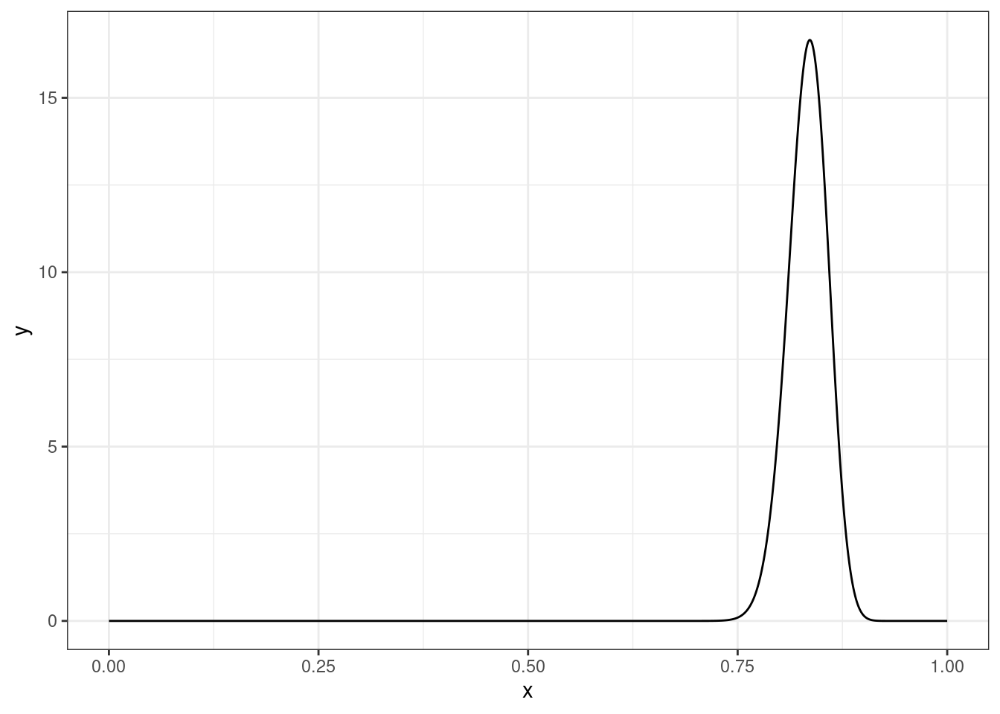
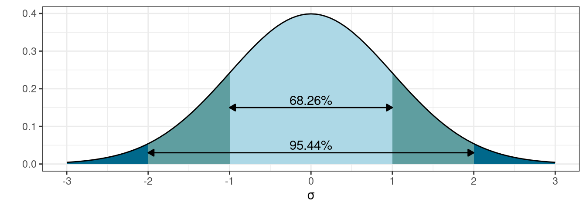
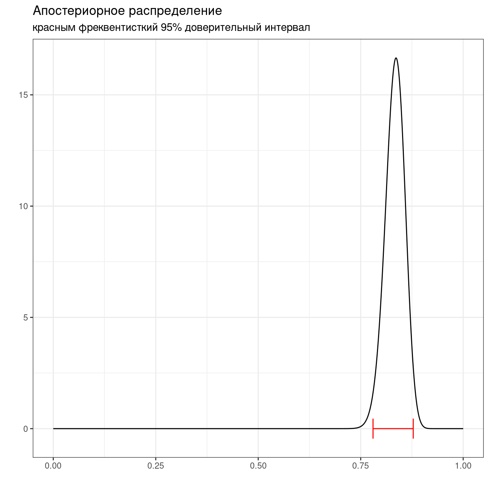
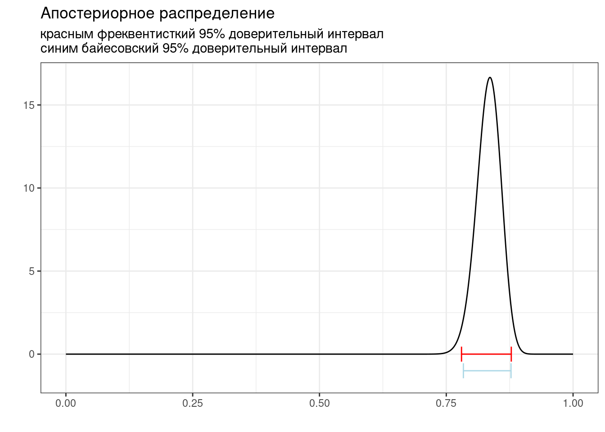
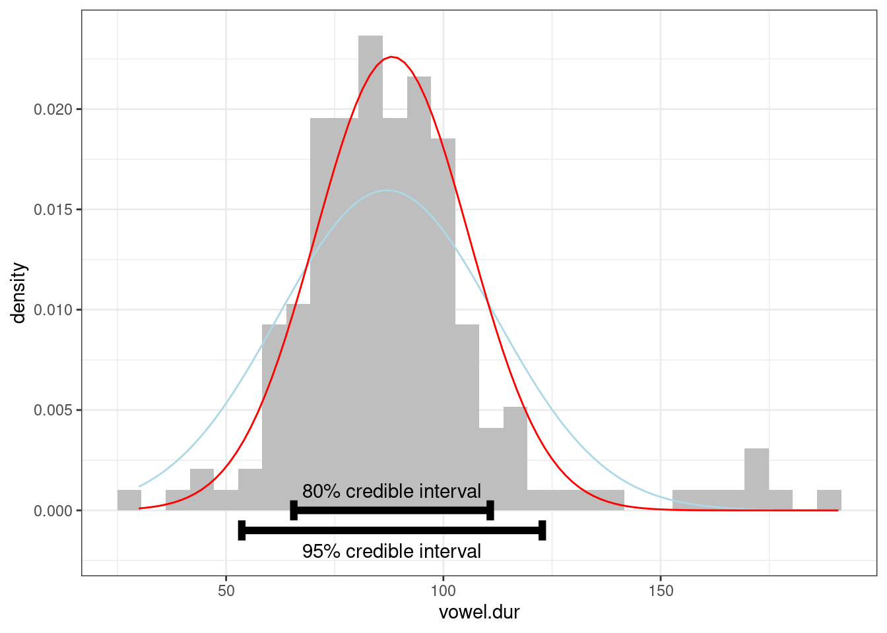

6 Байесовский доверительный интервал
Рассмотрим простенькую задачу, которую мы видели раньше:
Немного упрощая данные из статьи (Rosenbach 2003: 394), можно сказать что носители британского английского предпочитают s-генитив (90%) of-генитиву (10%). Проведите байесовский апдейт, если Вы наблюдаете в интервью британского актера из 120 контекстов 92 s-генитивов. Априорное распределение берите соразмерное данным. Ответ округлите до трёх или менее знаков после запятой.
tibble(x = seq(0, 1, by = 0.001),
y = dbeta(x, 108+92, 12+28)) %>%
ggplot(aes(x, y))+
geom_line()
6.1 Фреквентисткий доверительный интервал
Фреквентистский доверительный интервал (по-английски confidence interval) основан на правиле трех сигм нормального распределения:

z-score:
- 95% данных находится в 1.96 стандартных отклонений
- 99% данных находится в 2.58 стандартных отклонений
Доверительный интервал:
- предположим, что данные генеральной совокупности нормально распределены
- тогда доверительные интервалы выборок взятых из генеральной совокупности будут покрывать среднее генеральной совокупности
\[\bar{x} \pm z \times \frac{\sigma}{\sqrt{n}}\text{, где } z \text{ — это центральная } 1 - \frac{\alpha}{2} \text{ часть данных}\]
Распространение этой логики на биномиальные данные называется интервал Вальда:
\[\bar{x} = \theta; \sigma = \sqrt{\frac{\theta\times(1-\theta)}{n}}\]
Тогда интервал Вальда:
\[\theta \pm z\times\sqrt{\frac{\theta\times(1-\theta)} {n}}\]
Есть только одна проблема: работает он плохо. Его аналоги перечислены в других работ:
- assymptotic method with continuity correction
- Wilson score
- Wilson Score method with continuity correction
- Jeffreys interval
- Clopper–Pearson interval (default in R
binom.test()) - Agresti–Coull interval
- … см. пакет
binom
low_ci <- binom.test(x = 108+92, n = 108+92+12+28)$conf.int[1]
up_ci <- binom.test(x = 108+92, n = 108+92+12+28)$conf.int[2]
tibble(x = seq(0, 1, by = 0.001),
y = dbeta(x, 108+92, 12+28)) %>%
ggplot(aes(x, y))+
geom_line()+
annotate(geom = "errorbar", y = 0, xmin = low_ci, xmax = up_ci, color = "red")+
labs(title = "Апостериорное распределение",
subtitle = "красным фреквентисткий 95% доверительный интервал",
x = "", y = "")
В базовом пакете функция binom.test() не позволяет выбирать тип доверительного интервала. ci.method = "Clopper-Pearson" возможна, если включить библиотеку mosaic.
6.2 Байесовский доверительный интервал
Байесовский доверительный \((100-k)\)-% интервал (по-английски credible interval) — это интервал \([\frac{k}{2}, 1-\frac{k}{2}]\) от апостериорного распределения.
low_ci <- binom.test(x = 108+92, n = 108+92+12+28)$conf.int[1]
up_ci <- binom.test(x = 108+92, n = 108+92+12+28)$conf.int[2]
cred_int_l <- qbeta(0.025, 108+92, 12+28)
cred_int_h <- qbeta(0.975, 108+92, 12+28)
tibble(x = seq(0, 1, by = 0.001),
y = dbeta(x, 108+92, 12+28)) %>%
ggplot(aes(x, y))+
geom_line()+
annotate(geom = "errorbar", y = 0, xmin = low_ci, xmax = up_ci, color = "red")+
annotate(geom = "errorbar", y = -1, xmin = cred_int_l, xmax = cred_int_h, color = "lightblue")+
labs(title = "Апостериорное распределение",
subtitle = "красным фреквентисткий 95% доверительный интервал\nсиним байесовский 95% доверительный интервал",
x = "", y = "")
В работе (Coretta 2016) собраны данные
длительности исландских гласных. Отфильтруйте данные, произнесенные
носителем tt01 (переменная speaker),
произведите байесовский апдейт данных, моделируя длительность гласных
(переменная vowel.dur) нормальным распределением и
постройте график. На графике отобразите 80% и 95% байесовский
доверительный интервал (при построении интервала я использовал аргумент
width = 0.001). В качестве априорного распределения
используйте нормальное распределение со средним 87 и стандартным
отклонением 25.
